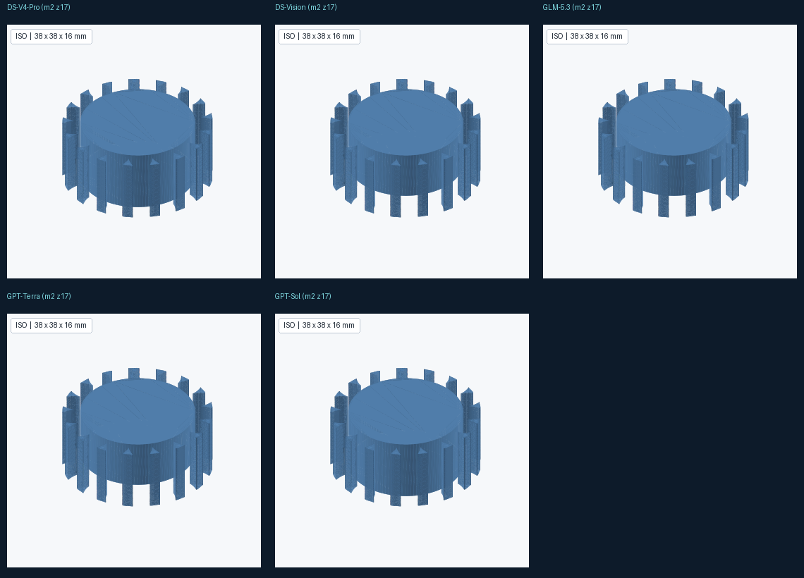
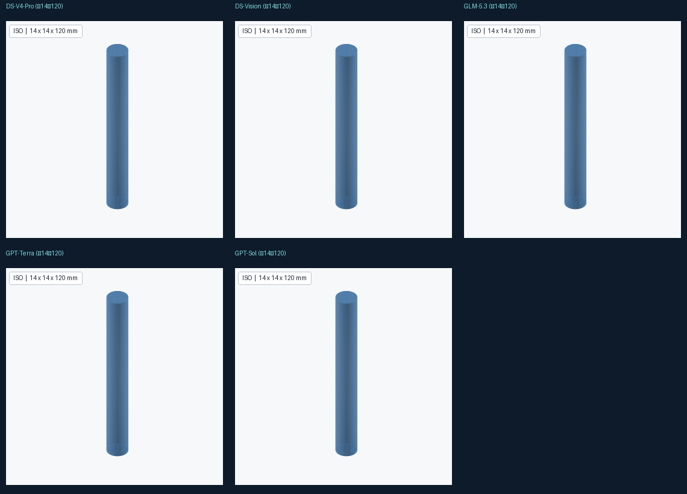

统一任务：真渐开线齿轮（make_gear m=2 z=17 w=16）+ 圆柱轴（Ø14×120），逐件 finish_part 归档 · 2026-09-07
| 模型 | 状态 | 零件数 | 步数 | 调研次数 | 耗时 | 齿轮 STEP |
|---|---|---|---|---|---|---|
| Qwen3.8-Flash （此前 tmp 运行验证成功，产物未保留） |
✅ 完成 | 2/2 | 10 | 0 | 1,666,663 B | |
| DeepSeek-V4-Pro | ✅ 完成 | 2/2 | 7 | 0 | 428,157 B | |
| DeepSeek-V4-Flash-Vision | ✅ 完成 | 2/2 | 10 | 1 | 1,666,663 B | |
| GLM-5.3-Flash | ✅ 完成 | 2/2 | 9 | 0 | 1,666,663 B | |
| GPT-5.6-Terra | ✅ 完成 | 2/2 | 12 | 1 | 1,666,663 B | |
| GPT-5.6-Sol 流式SSE不兼容产生调研循环；虽被中断，但齿轮+轴两个零件的STEP实际均已生成（齿轮428KB+轴5.7KB） |
❌ 部分/失败 | 2/2 | 4 | 4 | 428,157 B |
每个模型通过 varen 建出的真实零件，用 MechKernel 渲染（iso 视角）。所有模型都生成了一致的标准渐开线齿轮与圆柱轴——证明它们都在调用内核真几何，而非伪建模。

